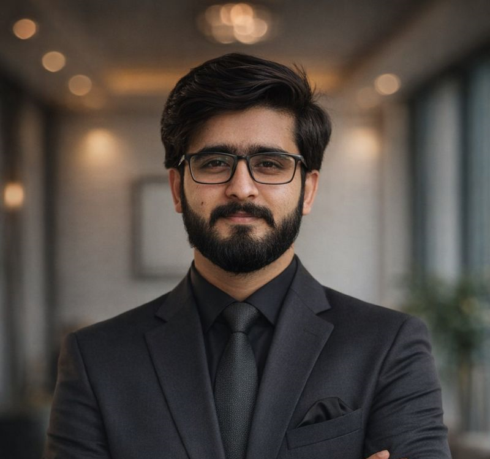

Automotive · 2023–2024
Connected Vehicle Data Platform
Optimized data ingestion and processing patterns for vehicle telemetry and analytics in work associated with Volvo Cars.
40% reduction in pipeline latency; 35% improvement in query performance.
I'm Rizwan Haidar, a Data Engineer and Analytics Consultant based in Bonn, Germany. My professional experience includes Toyota Kreditbank and enterprise data engineering work. I build dependable data pipelines, modern cloud infrastructure, and analytics systems that help teams move from raw data to confident decisions.

I bring together hands-on data platform engineering and an understanding of the decisions those platforms need to support. My work spans automotive, retail, healthcare, and international development—combining robust ETL/ELT pipelines, cloud services, automation, and business intelligence.
My professional background spans Toyota Kreditbank, enterprise consulting, healthcare, and public-sector analytics. I am also pursuing an MSc in Computer Science at the University of Bonn.
Experience across financial services, enterprise consulting, research, and international development.
Role title, start date, and responsibilities will be added once confirmed. This entry intentionally avoids unverified job details.
Supporting cloud-based data modernization, Airtable migration, access governance, and Power BI reporting for international energy programs.
Validating clinical research data, developing interactive dashboards, and exploring machine learning approaches for analytical workflows.
Delivered production ETL/ELT solutions for enterprise clients using Azure Data Factory, Databricks, PySpark, Informatica, and Teradata. Contributed to CI/CD automation and more reliable deployments.
Examples of professional work described at a high level. Metrics reflect outcomes reported in the existing portfolio.
Optimized data ingestion and processing patterns for vehicle telemetry and analytics in work associated with Volvo Cars.
40% reduction in pipeline latency; 35% improvement in query performance.
Developed ETL workflows and optimized SQL for reporting across operational domains in work associated with Federated Co-operatives.
30+ ETL workflows; 500 GB+ daily processing reported.
Supported clinical data processing, validation, and interactive analytics for biomedical research at Uniklinikum Köln.
3 interactive dashboards developed for research workflows.
Supported structured cloud data migration, access management, and KPI reporting for international energy program delivery at GIZ.
More accessible reporting and structured multi-stakeholder data workflows.
My technical focus is building maintainable data systems, from ingestion and transformation to operational dashboards.
Microsoft Azure, Azure Data Factory, Databricks, ADLS, AWS
SQL, Python, PySpark, Informatica, Teradata, ETL/ELT, modeling
Power BI, Pandas, Plotly, data validation, dashboard development
Terraform, Azure DevOps, CI/CD, Git, data governance
University of Bonn · Spatiotemporal data analysis, NLP, and IT security.
FAST NUCES, Islamabad · Dean's List of Honors.
Credentials: AWS Cloud Practitioner · Microsoft Azure AZ-900 & DP-900 · Teradata Vantage Data Engineering